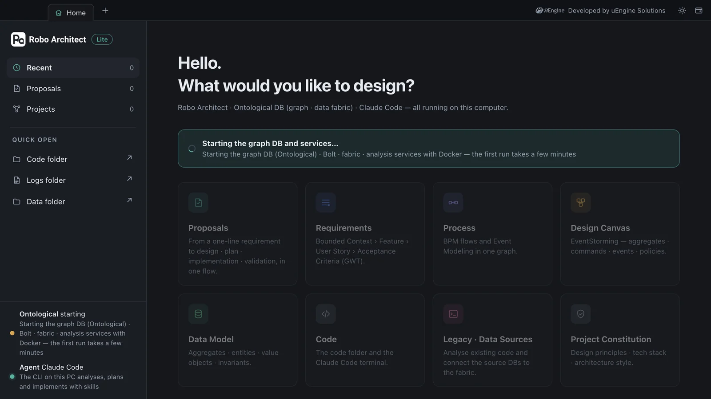
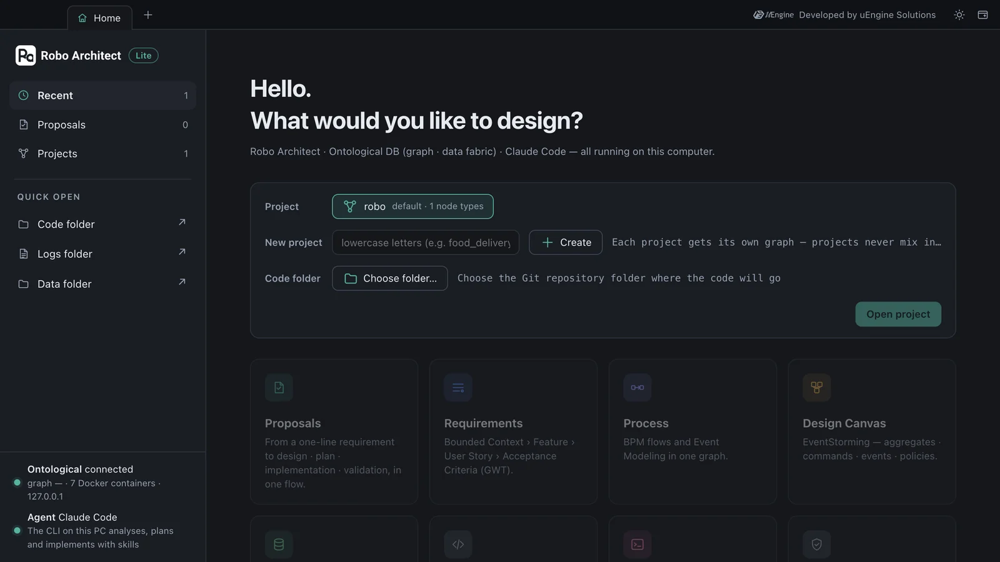
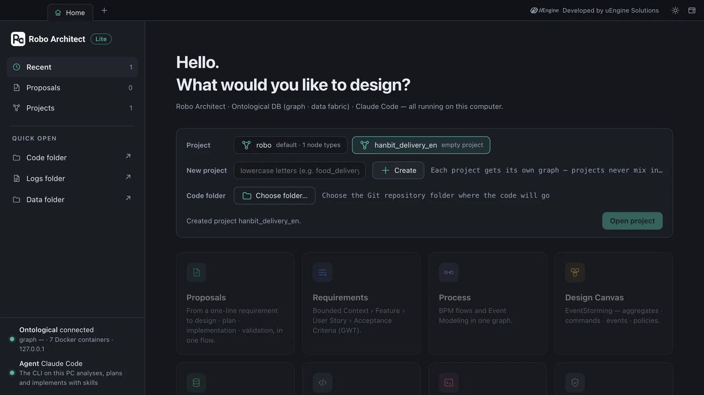
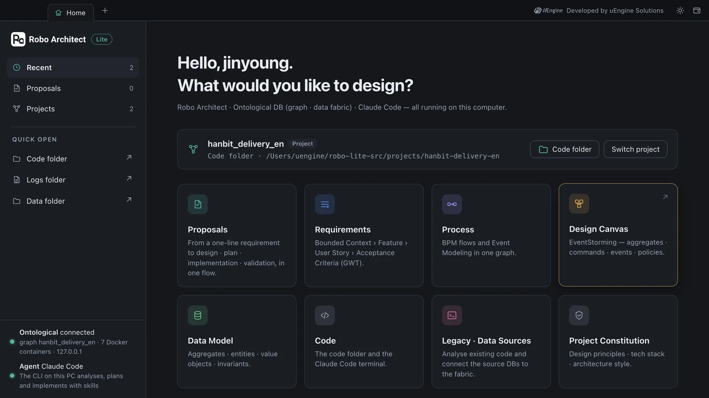

Install the Robo Architect Lite desktop app and launch it for the first time, check that it brings up the graph DB and analysis services in Docker, then create your first project, “hanbit_delivery_en”, on Home, choose its code folder and open it.
What gets installed#
Lite runs as one desktop app and seven Docker containers. When you start the app, it brings up the containers itself; when you quit, it leaves them running (so the next start is faster).
| Component | What it does |
|---|---|
| Desktop app | The screens, plus the Robo Architect backend running on your computer |
| graph-db | Ontological DB — stores the design as a graph. Each project gets its own graph |
| graph-bolt | The graph DB's Bolt-protocol entry point. The app sends its queries here |
| fabric · catalog | Connect data sources (existing DBs) to the graph DB and organize their schemas (Chapter 11) |
| analyzer · parser · gateway | Read and analyze legacy code |
Neo4j is not used. Earlier versions of Robo Architect kept the design in Neo4j, but Lite uses Ontological DB, where the graph DB itself also connects to your data sources.
Prerequisites#
| Item | Details |
|---|---|
| Docker Desktop | Install it and keep it running. 20 GB of free disk space and 16 GB of memory or more are recommended |
| Claude Code | Run claude once in a terminal and sign in. Proposal analysis, planning and implementation all run through it |
| Git | git --version should print a version |
| OpenAI API key | Used only for document upload in the Requirements tab. You can follow this whole tutorial (Chapters 3–14) without a key — legacy code analysis (Chapter 13) also runs through Claude Code |
What Claude Code does
Robo Architect's engine is not a built-in AI pipeline but Claude Code skills. When you create a proposal, the app calls claude on your computer and has it do the work by following a skill file (Chapter 10). That's why you don't need to enter a separate API key, and why you can also use the same skills directly from Claude Code in a terminal.
Hands-on 1 — Install#
The Lite installer comes as three files (ask uEngine for them). These steps are for Windows.
| File | Size | Contents |
|---|---|---|
Robo-Architect-Setup-<version>.exe |
about 100 MB | Desktop app installer |
robo-images.tar |
about 1.5 GB | Bundle of the seven container images |
SHA256SUMS |
two lines | Checksums that confirm both files are intact |
- Open PowerShell in the download folder and check that the hashes of both files match
SHA256SUMS.Get-Content .\SHA256SUMS Get-ChildItem .\Robo-Architect-Setup-*.exe, .\robo-images.tar | ForEach-Object { "{0} {1}" -f (Get-FileHash -Algorithm SHA256 $_).Hash.ToLower(), $_.Name } - Run
Robo-Architect-Setup-<version>.exe. You don't need administrator rights. Uncheck the “Run” option on the last screen — an app launched from the installer inherits the environment the installer started with. - Move the image bundle into the app's data folder. If you skip this step, the app stops at start-up — Home shows “Ontological stopped · Could not start — see the logs folder”, and the log in the logs folder says
docker.image_archive_missing.$dst = "$env:APPDATA\robo-architect-desktop\runtime" New-Item -ItemType Directory -Force -Path $dst | Out-Null Copy-Item .\robo-images.tar -Destination $dst -Force - (Only if you will use document upload in the Requirements tab) Set your OpenAI key as a user environment variable, then sign out and sign back in. Each service reads a different name, so put the same value under five names.
foreach ($n in 'OPENAI_API_KEY','LLM_API_KEY','ROBO_LLM_API_KEY','ROBO_EMBED_API_KEY','ROBO_SEARCH_LLM_API_KEY') { [Environment]::SetEnvironmentVariable($n, '<your key>', 'User') }
macOS
The screens in this tutorial were captured on macOS (Apple silicon) running the same setup. There is no macOS installer yet, so on macOS the app is started with the development team's run-from-source procedure. Once the app is up, its screens and behavior are the same as on Windows.
Hands-on 2 — First launch#
Start the app from the Robo-Architect icon on your desktop. The top of the window is the tab strip, and the first tab that opens is Home. While “Starting the graph DB and services…” is shown in the middle of Home, the app is bringing up the seven Docker containers. On the computer used for this tutorial, the first start took about 50 seconds (with the installer, the first start takes 4–5 minutes because the image bundle is unpacked). Until then the feature cards are dimmed and locked.

When everything is up, the status at bottom left changes to Ontological connected, and the project picker opens in the middle. There is no sign-in — Lite is a single-user app with no accounts, and your name and email are read from Git on your computer.

Check in a terminal that all containers are up. You should get seven lines, all healthy.
docker ps --filter "label=com.docker.compose.project=robo-architect-desktop" --format "{{.Names}} {{.Status}}"
robo-architect-desktop-gateway-1 Up 17 seconds (healthy)
robo-architect-desktop-analyzer-1 Up 28 seconds (healthy)
robo-architect-desktop-catalog-1 Up 34 seconds (healthy)
robo-architect-desktop-fabric-1 Up 39 seconds (healthy)
robo-architect-desktop-graph-bolt-1 Up 45 seconds (healthy)
robo-architect-desktop-graph-db-1 Up 50 seconds (healthy)
robo-architect-desktop-parser-1 Up 50 seconds (healthy)
Hands-on 3 — Create your first project#
A Robo Architect project is one graph inside the graph DB. There is one graph DB, but it can hold many graphs, so each new project gets its own graph and they never mix. At first there is one project, the default robo, created at install time.
- In the New project field on Home, type
hanbit_delivery_enand click ＋ Create. Names must start with a lowercase letter and use only lowercase letters, digits and underscores. “Created project hanbit_delivery_en.” appears and that project is selected. - Under Code folder, click Choose folder… and pick the folder where the implementation code will go. This tutorial uses a Git repository folder named
hanbit-delivery-en. In Chapter 6 Claude Code writes code into this folder, and each proposal uses a Git worktree of this folder as its sandbox. - Click Open project. The app points the backend at this project's graph (a few seconds) and shows the open project at the top of Home. The feature cards are enabled.


Make the code folder a Git repository
Sandbox implementation (Chapter 6) needs the code folder to be a Git repository. If it's an empty folder, set it up once in a terminal.
bash
mkdir hanbit-delivery-en && cd hanbit-delivery-en
git init -b main && git commit --allow-empty -m init
The next time you start the app, it reopens the project you opened last. To move to another project, click Switch project on Home.
What to check#
- All seven containers are
healthy. - The
hanbit_delivery_enproject and its code folder are shown at the top of Home. - The status at bottom left reads “Ontological connected — graph hanbit_delivery_en · 7 Docker containers · 127.0.0.1” and “Agent Claude Code”.
Quiz#
- In Lite, what is a “project” stored as?
- Do proposal analysis, planning and implementation need an OpenAI key?
Answers
- As one graph inside the graph DB (Ontological DB). There is one graph DB, and each project gets its own graph, so they never mix.
- No. Proposal work is done by Claude Code on your computer, following skills. The OpenAI key is only used for document upload in the Requirements tab. Legacy code analysis (Chapter 13) is done by Claude Code too.